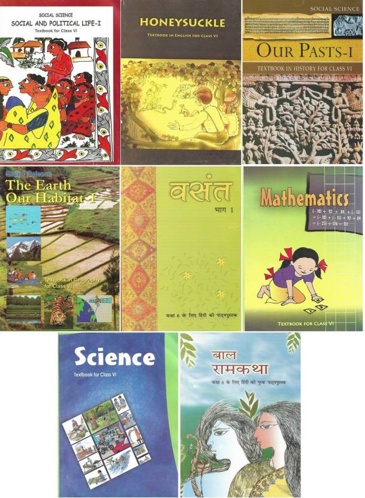

The National Council of Educational Research and Training (NCERT) is an autonomous organization in India that develops and publishes textbooks for various subjects and classes. Here are the primary class textbooks from class 6 to 10 published by NCERT:
Class 6:
Mathematics: Mathematics
Science: Science
Social Science: History - Our Past, Geography - The Earth Our Habitat, Social and Political Life
English:Honeysuckle,A Pact with the Sun
Class 7:
Mathematics: Mathematics
Science: Science
Social Science: Our Past - II, Our Environment, Social and Political Life - II
English:Honeycomb,An Alien Hand
Class 8:
Mathematics: Mathematics
Science: Science
Social Science: Our Past - III Part I, Our Past - III Part II, Resource and Development, Social and Political Life - III
Enlish:Honeydew,It So Happened
Class 9:
Mathematics: Mathematics
Science: Science (Physics, Chemistry, Biology)
Social Science: India and the Contemporary World - I, Contemporary India - I, Democratic Politics - I, Economics
English:Beehive,Moments:
Class 10:
Mathematics: Mathematics
Science: Science (Physics, Chemistry, Biology)
Social Science: India and the Contemporary World - II, Contemporary India- II, Democratic Politics - II, Understanding Economic Development
English:First Flight,Footprints without Feet